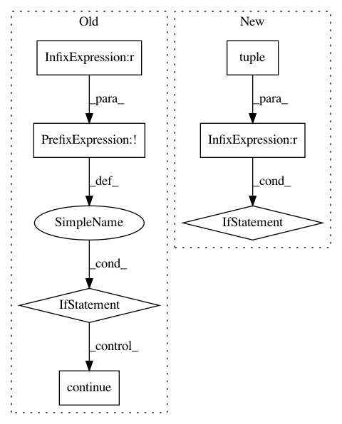

76b4f47a76b0ba64475112e28847f777e36a0d30,theano/tensor/nnet/tests/test_abstract_conv.py,BaseTestConv3d,test_gradinput_arbitrary_output_shapes,#BaseTestConv3d#,818
Before Change
min_output_shape = self.get_output_shape(
input_shape, filter_shape, self.default_subsamples,
border_mode, self.default_filters_dilations)
if not all(o >= min_o for (o, min_o) in zip(output_shape, min_output_shape)):
continue
for provide_shape in self.provide_shape:
yield (self.tcase_gi,
input_shape,
filter_shape,
After Change
computed_shape = get_conv_output_shape(
input_shape, filter_shape, border_mode, self.default_subsamples, self.default_filters_dilations)
// is this a valid combination?
if tuple(computed_shape) == output_shape:
yield (self.tcase_gi,
input_shape,
filter_shape,
output_shape,
self.default_subsamples,
border_mode,
True,
True,
self.default_filters_dilations,
False)
else:
// expect an error
yield (self.tcase_gi,
input_shape,
filter_shape,
output_shape,
self.default_subsamples,
border_mode,
True,
True,
self.default_filters_dilations,
True)
def test_gradinput_impossible_output_shapes(self):
for i in range(1, 20):
for k in range(1, 10):
for border_mode in ("valid", "half", "full", (0, 2, 1)):
In pattern: SUPERPATTERN
Frequency: 3
Non-data size: 7
Instances
Project Name: Theano/Theano
Commit Name: 76b4f47a76b0ba64475112e28847f777e36a0d30
Time: 2016-12-01
Author: gvtulder@gmail.com
File Name: theano/tensor/nnet/tests/test_abstract_conv.py
Class Name: BaseTestConv3d
Method Name: test_gradinput_arbitrary_output_shapes
Project Name: Theano/Theano
Commit Name: 76b4f47a76b0ba64475112e28847f777e36a0d30
Time: 2016-12-01
Author: gvtulder@gmail.com
File Name: theano/tensor/nnet/tests/test_abstract_conv.py
Class Name: BaseTestConv2d
Method Name: test_gradinput_arbitrary_output_shapes
Project Name: Theano/Theano
Commit Name: c571066f4b0cb46f5aef7f4fa280e1ffabb24172
Time: 2016-09-30
Author: oli.mastro@gmail.com
File Name: theano/tensor/opt_uncanonicalize.py
Class Name:
Method Name: local_alloc_dimshuffle